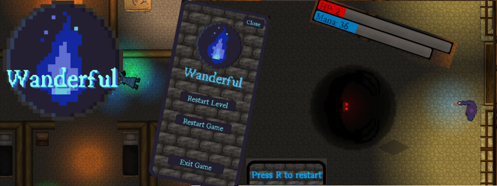

Week 8 - The Final Push
The second demo session I would say was even more valuable than the first in terms of feedback. Due to the game being in a much more fleshed out state, we could get a much better idea of what the players thought of the game. On top of the second demo session, we also gained valuable feedback by reaching out to friends and asking them to play the game after which they were asked to fill in a questionnaire. We received much praise for the gameplay in terms of difficulty, progression and balancing but also valuable criticism. A commonly brought up criticism was centered around lacking information/Ui feedback on the spells as there was no way for players to know which spells they had equipped (except for memorizing it when they picked it up or using it). We also found out that the button I bound to restart a level, (R), was way too close to the button used to equip/swap spells (E) which caused multiple instances of accidental level reloads.
After the second demo session, we wanted to improve on the game further leading up to the final presentation. The problem however, was that several members of the group were very busy with other assignments during this week which meant that I was left with the task of trying to implement as much feedback as possible to the game ahead of the final presentation (on the 24th). My first priority was to add a health bar and a mana bar, as multiple testers had pointed out that simply using a number made it hard to keep track of health and mana. Implementing this was fairly straightforward and could be done with a rudimentary sketched health bar sprite, a Unity slider and a simple script. After this I got to work on creating a UI element that communicated to the player which spells they had equipped in each of their three spell slots. I managed to get this working by adding three image elements for the UI where each spell slot contained an image which would switch depending on the spell equipped in that slot. On top of the pure UI elements, I also wanted to address the issue of testers commenting on it being unclear when the player object was in range to pick up a spell of the floor. To solve this, I added a hidden hexagon object to each spell object which would only become visible if the player was within pickup range.
I then went on to implement some balance changes based on the feedback. Something that was often brought up was that it was difficult to run out of mana while the damage output of some spells was a bit underwhelming. In response to this I increased the mana usage by the spells, in particular the AoE spells which could previously be spammed. The damage of some spells (the beam, green bouncy spell and blue bolt spell in specific) as those were pointed out as somewhat underwhelming damage-wise. Next, I went back to the UI and added a pause menu screen which consisted of a panel and a set of buttons from where the player could restart the current level or the entire game. The menu also allowed players to exit the game (without ALT-F4 or similar). When at it I also added a “press R to restart” panel that appeared when the player died.
My last & final contribution to our gameplay demo was the Warden character and the timer, which we hadn't gotten around to adding up to that point but remained in the “should" category of the todo list. I drew the character in paint3D (This is the only thing in the game that I made the artwork for) and got to coding. More than this I won't reveal here (have a look at the demo and let the timer count down if you want to experience it, hehe).